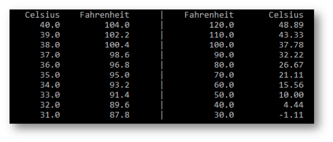

Write a program to generate the following table using two functions
double celsiusToFahrenheit(double c)
double fahrenheitToCelsius(double f)
Implement these two functions in a header/implementation file set (temp.h, temp.cpp)
